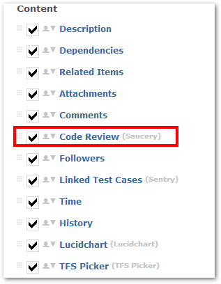

Saucery FAQ
Cannot see the CodeReview (Saucery) tab?
Make sure “Code Review” is enabled from Customize -> Templates (Select template in question) -> Process (select process in question) screen settings.

SVN Commits are not showing in Saucery
- Make sure your commit message contains an existing Gemini item id in this format i.e. "GEM:234 button was fixed".
- Check if there are any records in the table gemini_codecommits. If the table is empty, then the connector was not setup properly.
In this case download DebugView, run it and do another commit. You should see more logging in DebugView with a possible error.
When I click on a file in CodeReview the "Previous" tab is empty
Bear in mind when you commit a completely new file, the "previous" tab will be empty, because this is the first version of the file. You should get data for both sides on your second commit.
When I click on a file in CodeReview I get blank results for both sides
Go to the table gemini_codecommits and inspect the data value for your commit. Make sure the Filename and RepositoryUrl are correct.
Do I need an extra license for Saucery?
Saucery comes with the default Gemini license. No additional licenses are required.
Do we offer a SVN Linux connector?
Yes, we do. You can download it from here.